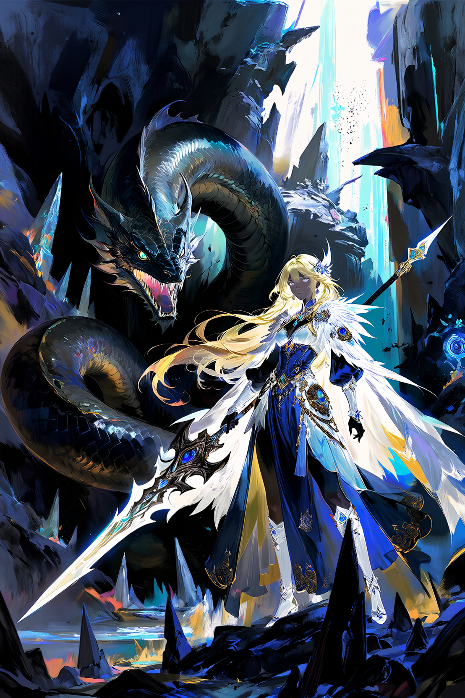

DISCOVER · COMMUNITY
社区
发现作品、灵感与创作方法
闪念正在热议
最新讨论南舟18 分钟前
今天把漫剧开场拆成三段，人物冲突、场景气氛、镜头推进，再让模型分别补细节，生成结果比直接长 Prompt 更稳定。


官方教程推荐
最新教程
机械圣像
Flux Pro 1.1

天门漫游
Seedance 2.0
森境微光
Flux Pro 1.1

月面凝望
Seedance 2.0
暂无匹配内容
南舟18 分钟前
今天把漫剧开场拆成“人物冲突、场景气氛、镜头推进”三段，再让模型分别补细节，生成结果比直接长 Prompt 更稳定。



木辛42 分钟前
试了 3 个文本模型写 API 错误复盘，最后选了能把复现步骤压成清单的模型，公开分享时更容易被照着排查。

星野1 小时前
把同一段角色设定拆成 9 个小镜头后，视频生成更容易保持动作连续，尤其适合先看节奏再补画面细节。